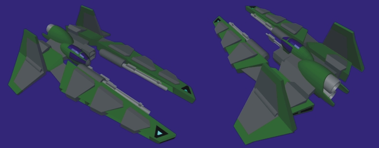

By: Justin, Art Director
Know your Fighters:
The Union Vexhall AF-4 (originally slated as the "Ruger-Vexhall")
Our original game concept was less faction based and more industry based. Each ship was manufactured by a competing company and one of the leading companies was "Ruger."

Ruger was a company that specialized in producing heavy arms. The Vexhall was a heavy fighter designed to deliver a substantial blow to larger, slower vessels.
The game concept has been much improved, along with the ship designs.
The Vexhall AF-4 is a powerhouse fighter. It boasts two medium cannons, suitable for destroying gun emplacements, communications, and other large ship based components. It is also armed with a high velocity Gatling gun for lightly armored targets, and carries 30 mini-missiles for dealing with other fighters. In addition, the Vexhall is equipped with a reasonably powerful sensor array that makes it useful as a scout.
Twin, vertically mounted engines provide the Vexhall with a good amount of thrust, and maximize the ability to dive or climb, although the weight of the armored hull does give the fighter a sluggish response to controls. The Vexhall is designed with large targets in mind and relies on missiles and armor to fend off enemy fighters rather than high G force "dog fighting" abilities.
Overall, the Vexhall is a great work of engineering. It is a definite threat to support vessels (such as frigates and cruisers). The thick hide protects it from onslaughts and allows the fighter to deliver heavy firepower on command. The versatile hull can carry even more fire power than described here, with a few minor modifications. The systems are durable and easily repaired in flight.
The Union Navy enjoys having ample firepower wrapped in thick armor, and they have it all in the Vexhall AF-4!
|